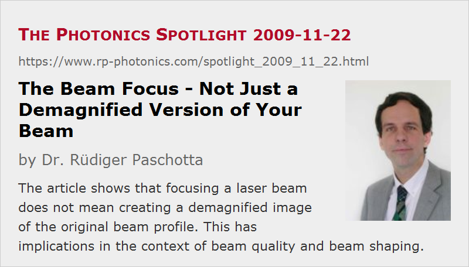

The Beam Focus – Not Just a Demagnified Version of Your Beam
Posted on 2009-11-22 as a part of the Photonics Spotlight (available as e-mail newsletter!)
Permanent link: https://www.rp-photonics.com/spotlight_2009_11_22.html
Author: Dr. Rüdiger Paschotta, RP Photonics Consulting GmbH
Abstract: The article shows that focusing a laser beam does not mean creating a demagnified image of the original beam profile. This has implications in the context of beam quality and beam shaping.

Imagine that you have a collimated laser beam which has a clean Gaussian intensity profile. Now you use a lens to focus that beam down to a small spot. Will you obtain a nice Gaussian beam shape also in the focus?
I suppose that many people would indeed expect that, as they believe that the focus is basically just a demagnified copy of the original large beam. Therefore, they believe that it is sufficient to inspect the profile where it is large – which is often much easier to do than inspecting the beam around focus. (Particularly for Q-switched lasers, it is inconvenient to inspect the focus, as the intensities are very high, and it is not always trivial to attenuate a beam while preserving its profile.)
Unfortunately, the described expectation is utterly wrong. Without inspecting the focus itself (or knowing the details of your beam source), you don't really know your beam. The beam profile may contain phase distortions which you cannot see by looking only at intensity profiles. While the beam is collimated, such phase distortions may have only negligible effects. Once you get to the focus, however, they become important. In particular, you may get a non-Gaussian beam shape there, and the beam radius may be significantly larger than you expect based on a calculation for Gaussian beams.
Wavefront Sensors Can Do More
Well, there is actually a way of fully characterizing a beam without looking at the focus. You have to measure not only the intensity profile, but also the phase profile. This can be done with some kind of wavefront sensor (for example, a Shack–Hartmann wavefront sensor). If you do this for one arbitrary position (just where it is convenient), you can calculate the beam profile at any other position. Unfortunately, wavefront sensors also have their limitations (for example, concerning spatial resolution) and are expensive.
The phase profiles of monochromatic beams can also be recorded with interferometry – which is also not a totally easy thing to do.
Focusing is Not Imaging
I also emphasize that what you do if you focus a collimated beam is not imaging. In other words, the focus is not a demagnified image of your original beam profile. The intensity at each point in the focus depends not only on the intensity at one point in the large beam, but rather on the whole intensity and phase profile.
In case that it still needs more to convince you: use some telescope to reduce the beam radius of the collimated beam before it hits the focusing lens. You will find that the focused spot will get larger rather than smaller.
This article is a posting of the Photonics Spotlight, authored by Dr. Rüdiger Paschotta. You may link to this page and cite it, because its location is permanent. See also the RP Photonics Encyclopedia.
Note that you can also receive the articles in the form of a newsletter or with an RSS feed.
Questions and Comments from Users
Here you can submit questions and comments. As far as they get accepted by the author, they will appear above this paragraph together with the author’s answer. The author will decide on acceptance based on certain criteria. Essentially, the issue must be of sufficiently broad interest.
Please do not enter personal data here; we would otherwise delete it soon. (See also our privacy declaration.) If you wish to receive personal feedback or consultancy from the author, please contact him e.g. via e-mail.
By submitting the information, you give your consent to the potential publication of your inputs on our website according to our rules. (If you later retract your consent, we will delete those inputs.) As your inputs are first reviewed by the author, they may be published with some delay.
|  |
If you like this page, please share the link with your friends and colleagues, e.g. via social media:
These sharing buttons are implemented in a privacy-friendly way!